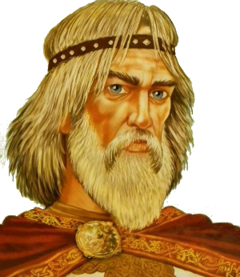

Ве́щий Оле́г

Ве́щий Оле́г - князь Новгородский с 879 года и великий князь Киевский с 882 года.
Получив власть над новгородскими землями после смерти Рюрика, как регент его малолетнего сына Игоря, Олег захватил Киев и перенёс туда столицу, объединив тем самым два главных центра восточных славян.
В летописи «Повесть временных лет» приводится его прозвище Вещий (знающий будущее, предвидящий будущее, а также мудрый или красноречивый).
В летописях излагаются две версии биографии Олега: традиционная и по Новгородской Первой летописи. Новгородская летопись сохранила фрагменты более раннего летописного свода, однако содержит неточности в хронологии по событиям X века.
Согласно «Повести временных лет», Олег был родичем (соплеменником) Рюрика.
В. Н. Татищев считает его шурином — братом жены Рюрика, которую называет Ефандой. Точное происхождение Олега в «Повести временных лет» не указывается. Предания, связанные с его личностью, сохранились также в полумифической скандинавской саге об Одде Орваре (Стреле), что свидетельствует о широкой известности князя в Скандинавии.
После смерти основателя княжеской династии Рюрика в 879 году Олег стал княжить в Новгороде как опекун малолетнего сына Рюрика Игоря. Однако, по данным археологии, Новгорода в IX веке ещё не существовало.
Подробнее